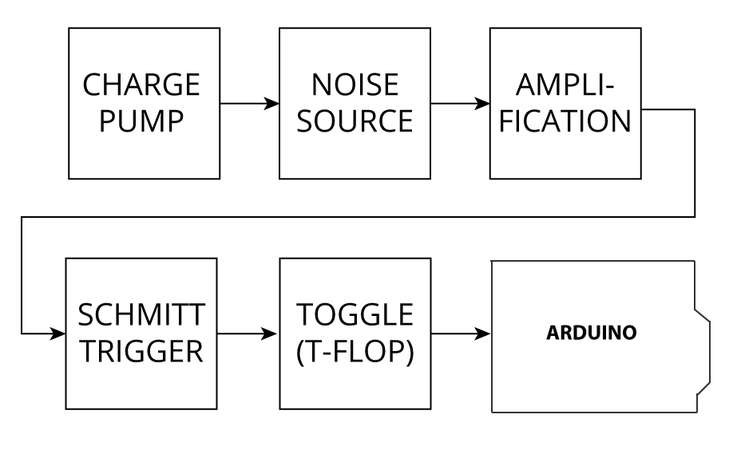
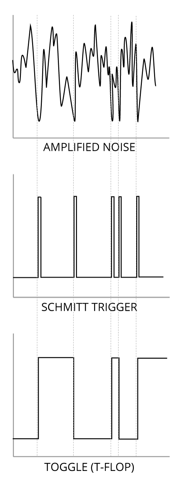

How in Works

1. Arduino's 5 volts is boosted to 12 volts with a charge pump 2. Avalanche noise is generated by passing 9V "backwards" through a transistor 3. The noise is amplified 4. When the noise drops below a threshold it triggers a digital pulse 5. This pulse then triggers a toggle which switches its output between high and low 6. The output of the toggle is read by Arduino 7. Arduino mixes new data with old data to eliminate bias and then sends it to the host computer as random information
